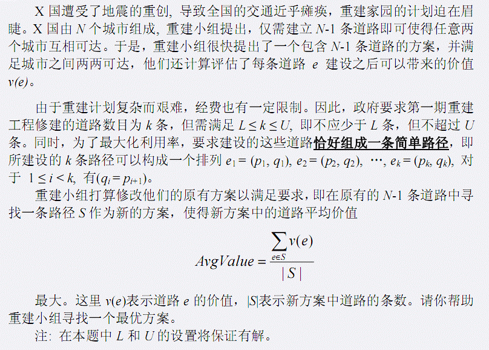
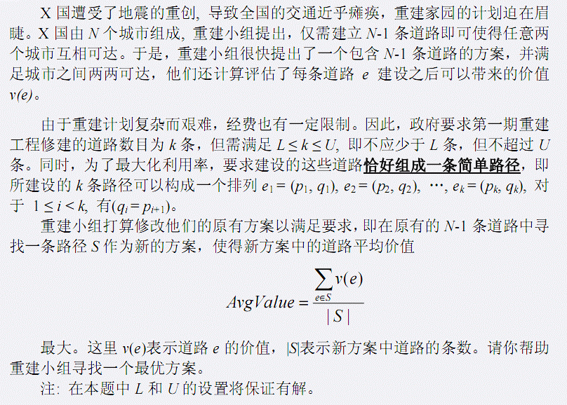

| F.A.Qs | Home | Discuss | ProblemSet | Status | Ranklist | Contest | 入门OJ | ModifyUser Xeonacid | Logout | 捐赠本站 |
|---|
| F.A.Qs | Home | Discuss | ProblemSet | Status | Ranklist | Contest | 入门OJ | ModifyUser Xeonacid | Logout | 捐赠本站 |
|---|

第一行包含一个正整数N，表示X国的城市个数. 第二行包含两个正整数L和U，表示政策要求的第一期重建方案中修建道路数的上下限 接下来的N-1行描述重建小组的原有方案，每行三个正整数Ai,Bi,Vi分别表示道路(Ai,Bi),其价值为Vi 其中城市由1..N进行标号
输出最大平均估值，保留三位小数
N<=100000,1<=L<=U<=N-1,Vi<=1000000 新加数据一组 By leoly,但未重测..2016.9.27